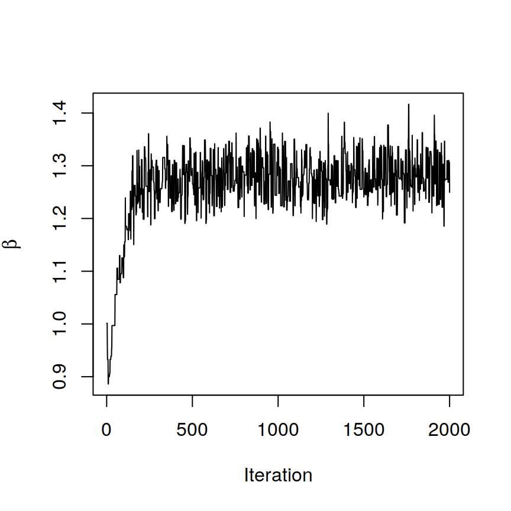
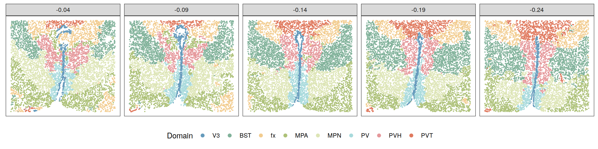
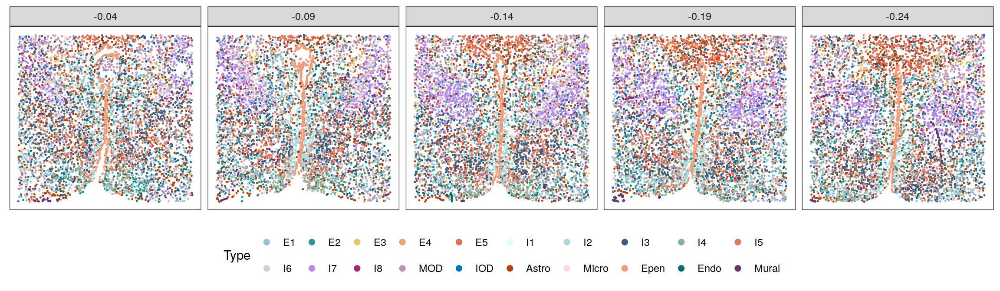
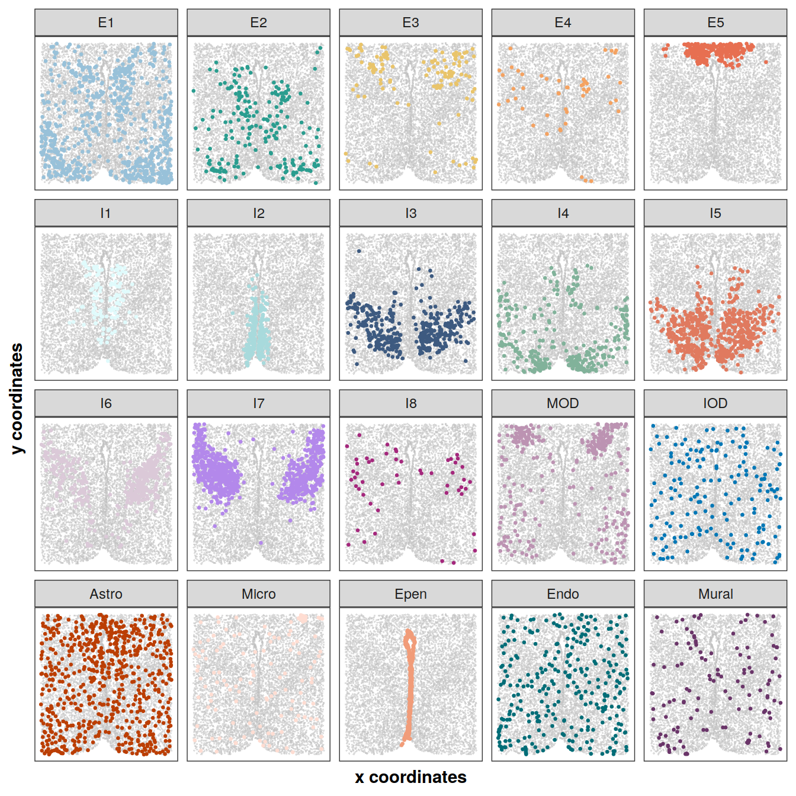
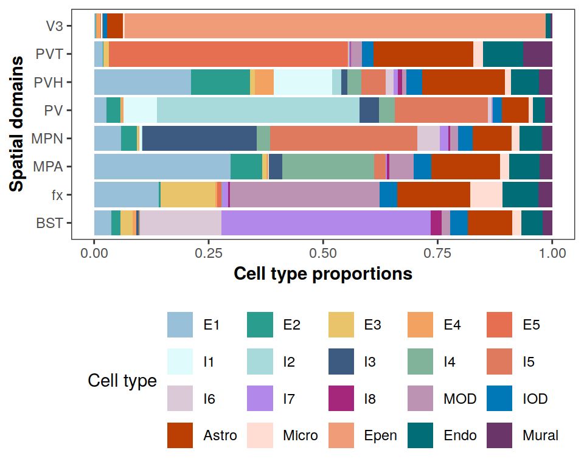

Last updated: 2022-06-12
Checks: 7 0
Knit directory: BASS-analysis/
This reproducible R Markdown analysis was created with workflowr (version 1.7.0). The Checks tab describes the reproducibility checks that were applied when the results were created. The Past versions tab lists the development history.
Great! Since the R Markdown file has been committed to the Git repository, you know the exact version of the code that produced these results.
Great job! The global environment was empty. Objects defined in the global environment can affect the analysis in your R Markdown file in unknown ways. For reproduciblity it’s best to always run the code in an empty environment.
The command set.seed(0) was run prior to running the
code in the R Markdown file. Setting a seed ensures that any results
that rely on randomness, e.g. subsampling or permutations, are
reproducible.
Great job! Recording the operating system, R version, and package versions is critical for reproducibility.
Nice! There were no cached chunks for this analysis, so you can be confident that you successfully produced the results during this run.
Great job! Using relative paths to the files within your workflowr project makes it easier to run your code on other machines.
Great! You are using Git for version control. Tracking code development and connecting the code version to the results is critical for reproducibility.
The results in this page were generated with repository version 829d10c. See the Past versions tab to see a history of the changes made to the R Markdown and HTML files.
Note that you need to be careful to ensure that all relevant files for
the analysis have been committed to Git prior to generating the results
(you can use wflow_publish or
wflow_git_commit). workflowr only checks the R Markdown
file, but you know if there are other scripts or data files that it
depends on. Below is the status of the Git repository when the results
were generated:
working directory clean
Note that any generated files, e.g. HTML, png, CSS, etc., are not included in this status report because it is ok for generated content to have uncommitted changes.
These are the previous versions of the repository in which changes were
made to the R Markdown (analysis/MERFISH.Rmd) and HTML
(docs/MERFISH.html) files. If you’ve configured a remote
Git repository (see ?wflow_git_remote), click on the
hyperlinks in the table below to view the files as they were in that
past version.
| File | Version | Author | Date | Message |
|---|---|---|---|---|
| Rmd | 829d10c | zhengli09 | 2022-06-12 | Update real data analysis |
| html | 67aecc1 | zhengli09 | 2022-03-05 | Build site. |
| Rmd | 8f34a27 | zhengli09 | 2022-03-05 | Add MERFISH analysis |
Here, we apply BASS to analyze the spatial transcriptomic data that measured the mouse preoptic region of hypothalamus by the MERFISH technology from Moffitt et al., 2018. We focus on the tissue sections Bregma -0.04, -0.09, -0.14, -0.19, and -0.24 mm from a consecutive brain hypothalamic region of animal 1. The original data can be downloaded from here. We excluded five blank control genes and excluded cells that were annotated to be the “Ambiguous” class as they were identified as putative doublets. Finally, we retained the same set of 155 genes measured on 5,488 (Bregma -0.04 mm), 5,557 (Bregma -0.09 mm), 5,926 (Bregma -0.14 mm), 5,803 (Bregma -0.19 mm), and 5,543 (Bregma -0.24 mm) cells along with their centroid coordiates for the downstream analysis. We manually annotated the five samples with spatial domain labels, allowing us to quantitatively evaluate different methods with ARI. There, the manual annotation of spatial domains was based on the spatial expression of marker genes and the histology diagram of the mouse brain from the Allen brain atlas. The processed data and manual annotations can be found at the data directory. For detailed usage of all the functions, please refer to the software tutorial section.
library(BASS)
library(Seurat)
library(tidyverse)
load("data/MERFISH_Animal1.RData") # cnts_mult info_multsmps <- c("-0.04", "-0.09", "-0.14", "-0.19", "-0.24")
cnts <- cnts_mult[smps] # a list of gene expression count matrices
xys <- lapply(info_mult[smps], function(info.i){
info.i$x <- info.i$x - min(info.i$x)
info.i$y <- info.i$y - min(info.i$y)
as.matrix(info.i[, c("x", "y")])
}) # a list of spatial coordinates matrices
# hyper-parameters
C <- 20 # number of cell types
R <- 8 # number of spatial domainsset.seed(0)
# Set up BASS object
BASS <- createBASSObject(cnts, xys, C = C, R = R, beta_method = "SW")***************************************
INPUT INFO:
- Number of tissue sections: 5
- Number of cells/spots: 5488 5557 5926 5803 5543
- Number of genes: 155
- Potts interaction parameter estimation method: SW
- Estimate Potts interaction parameter with SW algorithm
To list all hyper-parameters, Type listAllHyper(BASS_object)
***************************************# Data pre-processing:
# 1.Library size normalization followed with a log2 transformation
# 2.Dimension reduction with PCA after standardizing all the genes
# 3.Batch effect adjustment using the Harmony package
BASS <- BASS.preprocess(BASS, doLogNormalize = TRUE,
doPCA = TRUE, scaleFeature = TRUE, nPC = 20)***** Log-normalize gene expression data *****
***** Exclude genes with 0 expression *****
***** Reduce data dimension with PCA *****
***** Correct batch effect with Harmony *****# Run BASS algorithm
BASS <- BASS.run(BASS)# The spatial parameter beta has converged
# after checking the trace plot of beta
plot(1:BASS@burnin, BASS@samples$beta, xlab = "Iteration",
ylab = expression(beta), type = "l")
# post-process posterior samples:
# 1.Adjust for label switching with the ECR-1 algorithm
# 2.Summarize the posterior samples to obtain the cell type labels, spatial
# domain labels, and cell type proportion matrix estimate
BASS <- BASS.postprocess(BASS)Post-processing...
doneclabels <- BASS@results$c # cell type clusters
zlabels <- BASS@results$z # spatial domain labels
pi_est <- BASS@results$pi # cell type composition matrix# Perform DE analysis with Seurat
cnts_all <- do.call(cbind, cnts)
seu_obj <- CreateSeuratObject(counts = cnts_all)
seu_obj <- NormalizeData(seu_obj)
seu_obj <- ScaleData(seu_obj, features = rownames(seu_obj))Centering and scaling data matrixseu_obj <- RunPCA(seu_obj, features = rownames(seu_obj), verbose = F)
Idents(seu_obj) <- factor(unlist(clabels))
markers <- FindAllMarkers(seu_obj, only.pos = T,
min.pct = 0, logfc.threshold = 0, verbose = F)
top5 <- markers %>%
group_by(cluster) %>%
top_n(n = 5, wt = avg_logFC)
# By checking the top DE genes of each cell type cluster,
# we annotate specific cell types for each cluster
cTypes <- c(
"Astro", "Epen", "E5", "I7", "Endo",
"I6", "E2", "I1", "Mural", "I4",
"I3", "I8", "I5", "E1", "E4",
"I2", "MOD", "IOD", "E3", "Micro")
clabels <- lapply(clabels, function(clabels.l){
clabels.l <- factor(clabels.l)
levels(clabels.l) <- cTypes
clabels.l <- factor(clabels.l, levels = c(
"E1", "E2", "E3", "E4", "E5",
"I1", "I2", "I3", "I4", "I5",
"I6", "I7", "I8", "MOD", "IOD",
"Astro", "Micro", "Epen", "Endo", "Mural"
))
})Top DE genes for each cell type cluster
data.frame(top5) p_val avg_logFC pct.1 pct.2 p_val_adj cluster gene
1 0.000000e+00 2.7782123 0.981 0.553 0.000000e+00 1 Aldh1l1
2 0.000000e+00 2.4264055 0.974 0.531 0.000000e+00 1 Aqp4
3 0.000000e+00 2.2160414 0.970 0.611 0.000000e+00 1 Cxcl14
4 0.000000e+00 1.8467514 0.817 0.383 0.000000e+00 1 Pou3f2
5 0.000000e+00 1.7870323 0.996 0.814 0.000000e+00 1 Mlc1
6 0.000000e+00 2.7537409 0.991 0.614 0.000000e+00 2 Cd24a
7 0.000000e+00 2.4077562 0.960 0.414 0.000000e+00 2 Nnat
8 0.000000e+00 2.3283544 0.903 0.391 0.000000e+00 2 Cckbr
9 0.000000e+00 2.2676547 0.851 0.265 0.000000e+00 2 Cyr61
10 0.000000e+00 1.8315003 0.996 0.828 0.000000e+00 2 Mlc1
11 0.000000e+00 2.4014390 0.956 0.484 0.000000e+00 3 Necab1
12 0.000000e+00 2.1614759 0.920 0.311 0.000000e+00 3 Ntng1
13 0.000000e+00 1.8445879 0.996 0.668 0.000000e+00 3 Slc17a6
14 0.000000e+00 1.4593158 0.684 0.191 0.000000e+00 3 Sp9
15 1.314658e-173 1.7869902 0.575 0.234 2.037720e-171 3 Ramp3
16 0.000000e+00 1.5305178 0.557 0.165 0.000000e+00 4 Sp9
17 0.000000e+00 1.1407105 0.810 0.515 0.000000e+00 4 Col25a1
18 0.000000e+00 1.1046601 0.954 0.597 0.000000e+00 4 Gda
19 9.479762e-257 1.1648906 0.426 0.180 1.469363e-254 4 Oxtr
20 3.368667e-237 1.0359384 0.516 0.260 5.221434e-235 4 Ano3
21 0.000000e+00 3.9911837 0.992 0.410 0.000000e+00 5 Slco1a4
22 0.000000e+00 3.6960311 0.992 0.203 0.000000e+00 5 Fn1
23 0.000000e+00 3.0459345 0.837 0.189 0.000000e+00 5 Klf4
24 0.000000e+00 2.5213624 0.881 0.280 0.000000e+00 5 Sema3c
25 0.000000e+00 2.1815637 0.897 0.286 0.000000e+00 5 Rgs5
26 0.000000e+00 1.8715066 0.614 0.203 0.000000e+00 6 Cyp19a1
27 0.000000e+00 1.8651110 0.692 0.197 0.000000e+00 6 Greb1
28 0.000000e+00 1.7621425 0.638 0.198 0.000000e+00 6 Scgn
29 7.597424e-304 1.7692032 0.471 0.137 1.177601e-301 6 Crhbp
30 2.126901e-153 2.0296631 0.457 0.198 3.296697e-151 6 Npas1
31 0.000000e+00 2.6156152 0.713 0.342 0.000000e+00 7 Trh
32 0.000000e+00 2.5758911 0.936 0.357 0.000000e+00 7 Cbln1
33 0.000000e+00 1.7611146 0.826 0.341 0.000000e+00 7 Bdnf
34 2.610651e-259 1.7702424 0.619 0.236 4.046509e-257 7 Crhr2
35 2.777505e-92 1.5650985 0.665 0.425 4.305133e-90 7 Omp
36 0.000000e+00 2.5374012 0.931 0.413 0.000000e+00 8 Gal
37 0.000000e+00 2.1888604 0.871 0.257 0.000000e+00 8 Slc18a2
38 6.133611e-271 2.2107623 0.929 0.473 9.507096e-269 8 Th
39 2.216045e-217 2.1569721 0.856 0.397 3.434869e-215 8 Oprd1
40 5.864085e-127 1.8073287 0.417 0.107 9.089332e-125 8 Slc17a8
41 0.000000e+00 4.7278809 0.761 0.166 0.000000e+00 9 Myh11
42 0.000000e+00 3.4807871 0.909 0.304 0.000000e+00 9 Rgs5
43 0.000000e+00 3.1162781 0.755 0.162 0.000000e+00 9 Adora2a
44 1.793805e-302 3.2040650 0.570 0.137 2.780397e-300 9 Ace2
45 7.581840e-284 3.2464802 0.611 0.175 1.175185e-281 9 Lmod1
46 0.000000e+00 1.9110566 0.879 0.226 0.000000e+00 10 Isl1
47 0.000000e+00 1.5397982 0.969 0.720 0.000000e+00 10 Amigo2
48 9.192010e-217 0.9968776 0.683 0.361 1.424762e-214 10 Cartpt
49 2.044575e-174 1.6683518 0.400 0.144 3.169091e-172 10 Rxfp1
50 1.714037e-167 0.9873423 0.679 0.409 2.656758e-165 10 Gal
51 0.000000e+00 1.7965396 0.822 0.362 0.000000e+00 11 Coch
52 0.000000e+00 1.6496395 0.821 0.480 0.000000e+00 11 Nts
53 0.000000e+00 1.4586837 0.968 0.474 0.000000e+00 11 Esr1
54 2.124375e-235 1.0339532 0.654 0.310 3.292781e-233 11 Ntng1
55 4.314424e-181 1.0187289 0.783 0.526 6.687357e-179 11 Npy2r
56 5.266962e-206 2.8021821 0.992 0.342 8.163792e-204 12 Vgf
57 5.224383e-127 1.9437082 0.937 0.381 8.097793e-125 12 Scg2
58 7.457055e-74 1.0710592 0.962 0.708 1.155844e-71 12 Gad1
59 9.466820e-56 2.8976912 0.786 0.526 1.467357e-53 12 Crh
60 7.835512e-25 1.0233969 0.504 0.243 1.214504e-22 12 Ramp3
61 0.000000e+00 2.0453396 0.711 0.260 0.000000e+00 13 Calcr
62 0.000000e+00 1.6850038 0.583 0.211 0.000000e+00 13 Brs3
63 0.000000e+00 1.0776664 0.643 0.299 0.000000e+00 13 Tacr1
64 0.000000e+00 1.0729585 0.911 0.543 0.000000e+00 13 Pgr
65 1.937009e-200 1.1731734 0.578 0.318 3.002364e-198 13 Mc4r
66 0.000000e+00 0.8963277 0.896 0.651 0.000000e+00 14 Slc17a6
67 0.000000e+00 0.8762328 0.901 0.656 0.000000e+00 14 Gabra1
68 4.783688e-152 0.9369374 0.490 0.296 7.414716e-150 14 Synpr
69 2.760338e-132 1.2767034 0.342 0.175 4.278524e-130 14 Serpinb1b
70 7.445158e-76 1.3243617 0.348 0.221 1.154000e-73 14 Syt2
71 8.418062e-135 3.0748511 0.955 0.433 1.304800e-132 15 Sst
72 2.251097e-76 1.5431804 0.621 0.171 3.489200e-74 15 Fezf1
73 1.019193e-65 1.5683035 0.911 0.588 1.579749e-63 15 Nos1
74 5.861430e-65 5.0441705 0.701 0.347 9.085217e-63 15 Oxt
75 1.047668e-40 1.3744857 0.812 0.553 1.623885e-38 15 Cckar
76 0.000000e+00 2.7425164 0.977 0.244 0.000000e+00 16 Slc18a2
77 0.000000e+00 1.8303923 0.994 0.364 0.000000e+00 16 Scg2
78 0.000000e+00 1.5542207 0.984 0.487 0.000000e+00 16 Esr1
79 3.466184e-266 1.8681695 0.614 0.198 5.372586e-264 16 Egr2
80 5.834870e-173 1.6237173 0.377 0.103 9.044049e-171 16 Slc17a8
81 0.000000e+00 4.1205073 0.987 0.225 0.000000e+00 17 Ermn
82 0.000000e+00 3.6753149 0.995 0.563 0.000000e+00 17 Sgk1
83 0.000000e+00 3.4092880 0.822 0.148 0.000000e+00 17 Opalin
84 0.000000e+00 3.4009217 0.999 0.150 0.000000e+00 17 Mbp
85 0.000000e+00 2.7780301 0.989 0.425 0.000000e+00 17 Gjc3
86 0.000000e+00 4.2690694 0.998 0.251 0.000000e+00 18 Pdgfra
87 0.000000e+00 2.4640885 0.965 0.456 0.000000e+00 18 Traf4
88 0.000000e+00 2.2928015 0.979 0.436 0.000000e+00 18 Gjc3
89 0.000000e+00 1.7242792 0.982 0.556 0.000000e+00 18 Sox8
90 0.000000e+00 1.5623249 0.932 0.418 0.000000e+00 18 Sox6
91 0.000000e+00 3.2518485 0.927 0.157 0.000000e+00 19 Fezf1
92 1.962912e-284 2.0896526 0.955 0.582 3.042513e-282 19 Nos1
93 1.324413e-243 1.3266737 0.984 0.672 2.052840e-241 19 Slc17a6
94 2.642158e-199 1.7937964 0.815 0.370 4.095345e-197 19 Cbln1
95 1.902726e-85 1.7868655 0.526 0.229 2.949226e-83 19 Syt2
96 0.000000e+00 4.7368009 0.851 0.324 0.000000e+00 20 Selplg
97 9.669028e-251 3.7378587 0.482 0.098 1.498699e-248 20 Ebf3
98 4.106676e-111 1.5094060 0.688 0.403 6.365348e-109 20 Man1a
99 1.153161e-83 1.2789752 0.728 0.554 1.787399e-81 20 Rgs2
100 7.518159e-20 1.1842371 0.453 0.390 1.165315e-17 20 Slc15a3You can refer to visualization for some useful plotting functions or you can write your own code for plotting.
source("code/viz.R")zlabels <- lapply(zlabels, function(zlabels.l){
zlabels.l <- factor(zlabels.l)
levels(zlabels.l) <- c("BST", "PV", "PVT", "MPN",
"V3", "fx", "MPA", "PVH")
zlabels.l <- factor(zlabels.l, levels = c("V3", "BST",
"fx", "MPA", "MPN", "PV", "PVH", "PVT"))
})
cols <- c("#669bbc", "#81b29a", "#f2cc8f", "#adc178",
"#dde5b6", "#a8dadc", "#e5989b", "#e07a5f")
plotClustersFacet(xys, zlabels, smps, size = 0.2) +
scale_color_manual("Domain", values = cols) +
guides(color = guide_legend(nrow = 1,
override.aes = list(size = 2)))
| Version | Author | Date |
|---|---|---|
| 67aecc1 | zhengli09 | 2022-03-05 |
cols <- c("#98c1d9", "#2a9d8f", "#e9c46a", "#f4a261", "#e76f51",
"#e0fbfc", "#a8dadc", "#3d5a80", "#81b29a", "#e07a5f",
"#DBC9D8", "#b388eb", "#A4277C", "#BC93B2", "#0077b6",
"#bb3e03", "#ffddd2", "#f19c79", "#006d77", "#6A3569")
plotClustersFacet(xys, clabels, smps, size = 0.2) +
scale_color_manual("Type", values = cols) +
guides(color = guide_legend(byrow = T, nrow = 2,
override.aes = list(size = 2)))
| Version | Author | Date |
|---|---|---|
| 67aecc1 | zhengli09 | 2022-03-05 |
library(gghighlight)
plotCellTypes(xys[[3]], clabels[[3]], cols, ncol = 5, dotsize = 0.5,
size = 0.6, alpha = 0.5, stroke = 0)
# adjust order of labeling
pi_est <- pi_est[match(
levels(clabels[[1]]), cTypes),
c(5,1,6,7,4,2,8,3)]
colnames(pi_est) <- c("V3", "BST", "fx", "MPA", "MPN", "PV", "PVH", "PVT")
rownames(pi_est) <- levels(clabels[[1]])
plotCellTypeCompBar(pi_est, cols, nrow = 4)
sessionInfo()R version 4.2.0 (2022-04-22)
Platform: x86_64-pc-linux-gnu (64-bit)
Running under: Ubuntu 18.04.5 LTS
Matrix products: default
BLAS: /usr/lib/x86_64-linux-gnu/openblas/libblas.so.3
LAPACK: /usr/lib/x86_64-linux-gnu/libopenblasp-r0.2.20.so
locale:
[1] LC_CTYPE=en_US.UTF-8 LC_NUMERIC=C
[3] LC_TIME=en_US.UTF-8 LC_COLLATE=en_US.UTF-8
[5] LC_MONETARY=en_US.UTF-8 LC_MESSAGES=en_US.UTF-8
[7] LC_PAPER=en_US.UTF-8 LC_NAME=C
[9] LC_ADDRESS=C LC_TELEPHONE=C
[11] LC_MEASUREMENT=en_US.UTF-8 LC_IDENTIFICATION=C
attached base packages:
[1] stats graphics grDevices utils datasets methods base
other attached packages:
[1] gghighlight_0.3.2 forcats_0.5.0 stringr_1.4.0 dplyr_1.0.8
[5] purrr_0.3.4 readr_1.3.1 tidyr_1.1.1 tibble_3.1.6
[9] ggplot2_3.3.5 tidyverse_1.3.0 Seurat_3.2.3 BASS_1.1.0
[13] GIGrvg_0.5 workflowr_1.7.0
loaded via a namespace (and not attached):
[1] utf8_1.2.2 reticulate_1.25
[3] tidyselect_1.1.2 htmlwidgets_1.5.1
[5] combinat_0.0-8 grid_4.2.0
[7] BiocParallel_1.22.0 lpSolve_5.6.15
[9] Rtsne_0.16 munsell_0.5.0
[11] codetools_0.2-18 ica_1.0-2
[13] future_1.25.0 miniUI_0.1.1.1
[15] withr_2.4.3 colorspace_2.0-3
[17] Biobase_2.48.0 highr_0.9
[19] knitr_1.37 rstudioapi_0.13
[21] stats4_4.2.0 SingleCellExperiment_1.14.1
[23] ROCR_1.0-11 tensor_1.5
[25] listenv_0.8.0 labeling_0.4.2
[27] MatrixGenerics_1.4.3 git2r_0.28.0
[29] GenomeInfoDbData_1.2.6 harmony_0.1.0
[31] polyclip_1.10-0 farver_2.1.0
[33] rprojroot_2.0.2 parallelly_1.31.1
[35] vctrs_0.3.8 generics_0.1.2
[37] xfun_0.29 R6_2.5.1
[39] GenomeInfoDb_1.24.2 ggbeeswarm_0.6.0
[41] rsvd_1.0.3 bitops_1.0-7
[43] spatstat.utils_2.3-1 DelayedArray_0.18.0
[45] assertthat_0.2.1 promises_1.1.1
[47] scales_1.1.1 beeswarm_0.4.0
[49] gtable_0.3.0 globals_0.15.0
[51] processx_3.5.2 goftest_1.2-3
[53] rlang_1.0.1 splines_4.2.0
[55] lazyeval_0.2.2 broom_0.7.10
[57] yaml_2.3.5 reshape2_1.4.4
[59] abind_1.4-5 modelr_0.1.8
[61] backports_1.2.1 httpuv_1.5.4
[63] tools_4.2.0 ellipsis_0.3.2
[65] jquerylib_0.1.4 RColorBrewer_1.1-2
[67] BiocGenerics_0.38.0 ggridges_0.5.3
[69] Rcpp_1.0.8.3 plyr_1.8.7
[71] sparseMatrixStats_1.8.0 zlibbioc_1.34.0
[73] RCurl_1.98-1.5 ps_1.6.0
[75] rpart_4.1.16 deldir_1.0-6
[77] pbapply_1.5-0 viridis_0.5.1
[79] cowplot_1.1.1 S4Vectors_0.30.2
[81] zoo_1.8-10 SummarizedExperiment_1.22.0
[83] haven_2.3.1 ggrepel_0.9.1
[85] cluster_2.1.3 fs_1.5.2
[87] magrittr_2.0.2 data.table_1.14.2
[89] scattermore_0.8 lmtest_0.9-40
[91] reprex_0.3.0 RANN_2.6.1
[93] whisker_0.4 fitdistrplus_1.1-8
[95] matrixStats_0.61.0 hms_0.5.3
[97] patchwork_1.1.1 mime_0.12
[99] evaluate_0.15 xtable_1.8-4
[101] mclust_5.4.9 readxl_1.3.1
[103] IRanges_2.26.0 gridExtra_2.3
[105] compiler_4.2.0 scater_1.16.2
[107] KernSmooth_2.23-20 crayon_1.5.0
[109] htmltools_0.5.2 mgcv_1.8-40
[111] later_1.1.0.1 lubridate_1.7.9
[113] DBI_1.1.1 dbplyr_1.4.4
[115] MASS_7.3-57 Matrix_1.4-1
[117] cli_3.2.0 parallel_4.2.0
[119] igraph_1.3.1 GenomicRanges_1.44.0
[121] pkgconfig_2.0.3 getPass_0.2-2
[123] plotly_4.9.2.1 xml2_1.3.3
[125] vipor_0.4.5 bslib_0.3.1
[127] XVector_0.32.0 rvest_0.3.6
[129] callr_3.7.0 digest_0.6.29
[131] sctransform_0.3.3 RcppAnnoy_0.0.19
[133] spatstat.data_2.2-0 rmarkdown_2.12.1
[135] cellranger_1.1.0 leiden_0.4.2
[137] uwot_0.1.11 DelayedMatrixStats_1.14.3
[139] shiny_1.5.0 lifecycle_1.0.1
[141] nlme_3.1-157 jsonlite_1.8.0
[143] BiocNeighbors_1.6.0 limma_3.52.0
[145] viridisLite_0.4.0 fansi_1.0.2
[147] pillar_1.7.0 lattice_0.20-45
[149] fastmap_1.1.0 httr_1.4.2
[151] survival_3.3-1 glue_1.6.2
[153] spatstat_1.64-1 label.switching_1.8
[155] png_0.1-7 stringi_1.7.6
[157] sass_0.4.1 blob_1.2.1
[159] BiocSingular_1.4.0 irlba_2.3.3
[161] future.apply_1.9.0